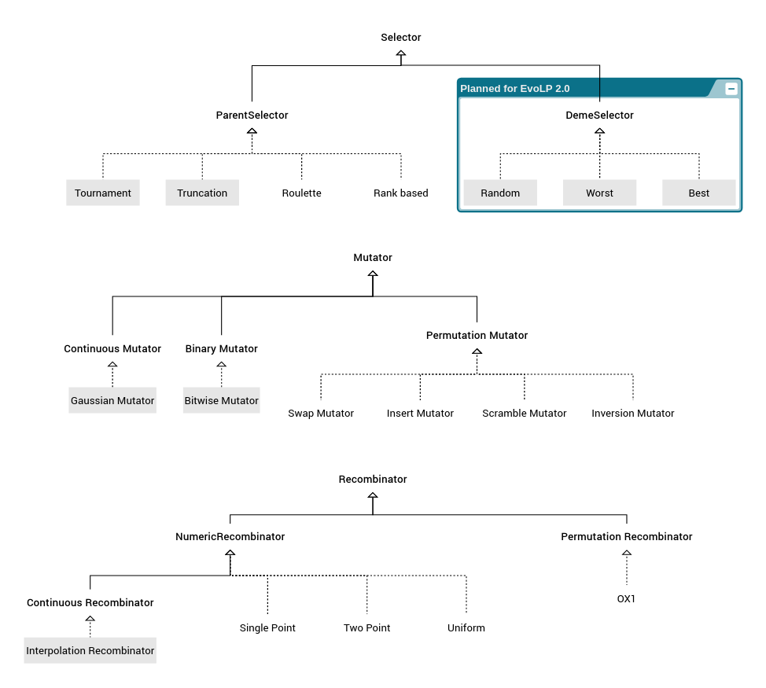

Extending EvoLP
EvoLP was designed with extensibility in mind, by using Julia's dynamic dispatch ability to keep things simple.
We have 3 main functions (select, cross and mutate) which will perform differently depending on the parameters passed. By passing a specific type, we ensure that the selection/recombination/mutation acts how we expect to. The available type hierarchy in EvoLP.jl looks like the following:

In the image above, the abstract types are highlighted in bold font. The composite types (those you can instantiate) are marked with dotted lines, and those with parameters are bounded in a grey box.
Creating your own blocks
If you want to experiment with new building blocks, you can create your own by using the abstract block types as a supertype of your own selectors, mutators and recombinators. These abstract blocks are the following:
EvoLP.BinaryMutator — TypeAbstract Mutator for binary individuals.
EvoLP.ContinuousMutator — TypeAbstract Mutator for real-valued individuals.
EvoLP.ContinuousRecombinator — TypeAbstract continuous recombinator.
EvoLP.DemeSelector — TypeAbstract Deme Selector
EvoLP.Mutator — TypeAbstract Mutation Method.
EvoLP.NumericRecombinator — TypeAbstract numeric recombinator.
EvoLP.ParentSelector — TypeAbstract Parent Selector
EvoLP.PermutationMutator — TypeAbstract Mutator for permutation individuals.
EvoLP.PermutationRecombinator — TypeAbstract permutation recombinator.
EvoLP.Recombinator — TypeAbstract recombinator.
EvoLP.Selector — TypeAbstract Selector for either Parent or Deme selection methods.
The abstract types are not exported in EvoLP, which means that you will not see them if you used using EvoLP in your code. You need to access them directly, by writing EvoLP.<theabstractblock>.
Once you have your own type, you need to explicitly code how the block should operate. This is done by creating a new method of the select, cross or mutate functions, depending on what your abstract supertype is.
After that, you can use the new blocks in your algorithms like any of the other built-in blocks.
A hypothetical example
You can use the corresponding AbstractType to create a new mutation method called MyCrazyMutation. This new mutator would work on a real-valued vector, so it should be a sub-type of the ContinuousMutator abstract type:
struct MyCrazyMutation <: EvoLP.ContinuousMutator
param1
param2
param3
endThen, we can code a new method for the mutate function, which will look something like the following:
function mutate(M::MyCrazyMutation, ind; rng=Random.GLOBAL_RNG)
mutant = deepcopy(ind)
if rand(rng) < param3
mutant[1] = mutant[1] + M.param1
mutant[2] = mutant[2] - M.param2
end
return mutant
endThis MyCrazyMutation method will then operate on a hypothetical 2-dimensional individual ind, and will change its first dimension by its param1, and the second dimension using param2 if a random number is less than its param3.
Then, you can use it in your algorithms as if it was any other block. Here is a fake snippet for illustration purposes:
function myalgorithm(...)
M = MyCrazyMutation(p1, p2, p3)
...
mutate(M, ind)
...
endA word about randomisation
If using random numbers (for example in crossover or mutation operators) it is always a good idea to pass to your function a random number generator instance. In this way, your code can be used both for unit testing as well as for constructing shareable examples that are reproducible for the sake of science.